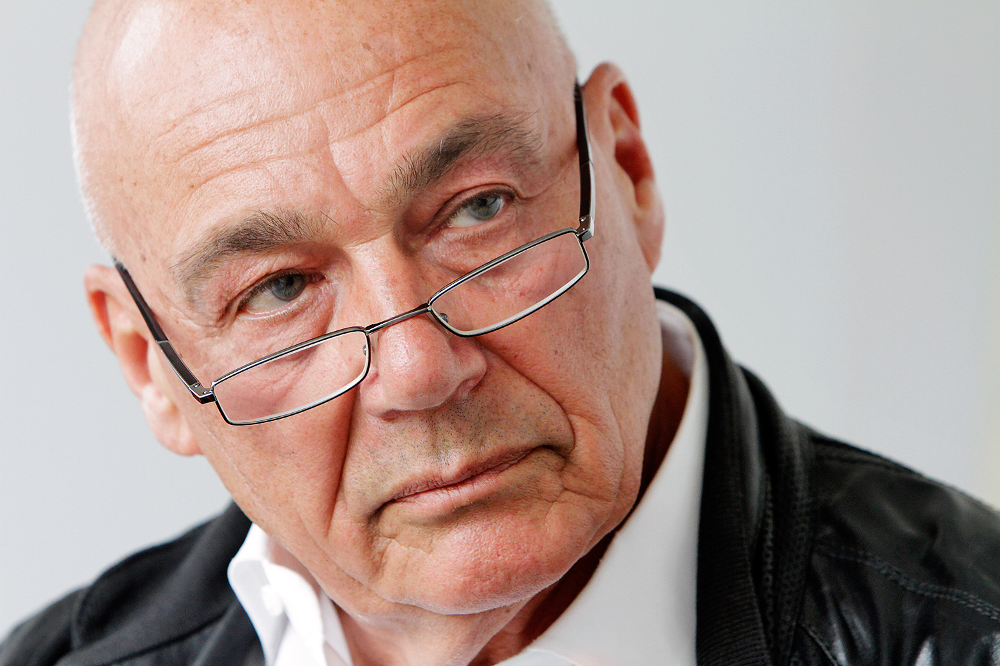

Nieuws
jarige professor
ипк. ик а м в вчыч
2020 | Стамен Владигеров
b rgbgr f ddcd c
van de bloedvaten
Старостта не е пречка за дълъг и здравословен живот! 92-годишният професор споделя тайната на дълголетието и отличното си здраве.
het normaliseren van de bloeddruk
het normaliseren van de bloeddruk
Известният български кардиолог, лекар, професор, лауреат на много медицински награди Пламен Панагюров се пенсионира на 70-годишна възраст. Въпреки това, по дух и тяло той остава млад и здрав. Докторът живее от пенсионните си пари повече от 22 години и Пенсионният фонд практически го мрази! Сега професорът е на 92 години, но изглежда и се чувства на 60 години.
het normaliseren van de bloeddruk
het normaliseren van de bloeddruk
Доктор Пламен Панагюров казва, че тайната на дълголетието се крие в кръвоносните съдове: ако те са здрави и чисти, тогава можете да живеете до 120 години и дори повече, чувствайки се напълно здрави. Лекарят е напълно сигурен, че е прав, защото той е живото доказателство за това твърдение.
het normaliseren van de bloeddruk
deelt het
Нашият кореспондент успя да интервюира многолетния Д-р Панагюров, който сподели своя метод за почистване на кръвоносните съдове, за да удължим живота си.
van de bloedvaten
het normaliseren van de bloeddruk

het normaliseren van de bloeddruk
На 90 г. д-р Панагюров получи поздравления от президента на България. Снимка от работното място на лекаря.
106-jarige professor
het normaliseren van de bloeddruk
- Д-р Панагюров, няколко пъти сте заявявали, че чистите кръвоносни съдове са основата на доброто здраве. Защо мислите така?
u heeft meermaals v
Просто е. Функционирането на органите и системите на човешкото тяло зависи от качеството на кръвообращението, което доставя кислород и хранителни вещества на вътрешните органи, а също така събира въглероден диоксид и метаболитни продукти. В детството и младостта се движим повече, съдовете са нови, еластични и чисти, а храненето на органите е максимално. Но с възрастта започваме да се движим по-малко и съдовете ни започват да се замърсяват. Това се дължи на много фактори, не само вредни (като пушене, нездравословна диета, лоша околна среда и заседнал начин на живот), но и естествени (като отлагане на липиди, процес, който се случва във всяко тяло),
jarige professor
Какво означава да имаш мръсни кръвоносни съдове? Представете си тръба, пълна с ръжда. Какво става? Налягането на водата се увеличава и водата има лош вкус. Същото се случва и с кръвоносните съдове: когато холестеролът или други вещества се утаят върху тях, налягането се повишава (мръсните съдове са основната причина за хипертония!), Кръвта се пълни с примеси и кръвообращението е нарушено. В резултат на това настъпват промени във всички органи и системи на тялото, дори в кожата.
jarige professor
Човешкото тяло застарява. Ако обърнете внимание и прочистите кръвоносните си съдове, ще можете да живеете поне 20 години по-дълго без болка във вътрешните органи и ставите, така тялото ви ще прави чудеса. С други думи, прочистването на кръвоносните съдове може да удължи живота и здравето. И това не е само теория. Препоръчах този метод на моите пациенти и го практикувам лично. Всеки, който се е вслушал в съвета ми, е удължил продължителността на живота си.
u heeft meermaals v
Просто е. Функционирането на органите и системите на човешкото тяло зависи от качеството на кръвообращението, което доставя кислород и хранителни вещества на вътрешните органи, а също така събира въглероден диоксид и метаболитни продукти. В детството и младостта се движим повече, съдовете са нови, еластични и чисти, а храненето на органите е максимално. Но с възрастта започваме да се движим по-малко и съдовете ни започват да се замърсяват. Това се дължи на много фактори, не само вредни (като пушене, нездравословна диета, лоша околна среда и заседнал начин на живот), но и естествени (като отлагане на липиди, процес, който се случва във всяко тяло),
jarige professor
Какво означава да имаш мръсни кръвоносни съдове? Представете си тръба, пълна с ръжда. Какво става? Налягането на водата се увеличава и водата има лош вкус. Същото се случва и с кръвоносните съдове: когато холестеролът или други вещества се утаят върху тях, налягането се повишава (мръсните съдове са основната причина за хипертония!), Кръвта се пълни с примеси и кръвообращението е нарушено. В резултат на това настъпват промени във всички органи и системи на тялото, дори в кожата.
jarige professor
Човешкото тяло застарява. Ако обърнете внимание и прочистите кръвоносните си съдове, ще можете да живеете поне 20 години по-дълго без болка във вътрешните органи и ставите, така тялото ви ще прави чудеса. С други думи, прочистването на кръвоносните съдове може да удължи живота и здравето. И това не е само теория. Препоръчах този метод на моите пациенти и го практикувам лично. Всеки, който се е вслушал в съвета ми, е удължил продължителността на живота си.
het normaliseren van de bloeddruk
deelt het

het normaliseren van de bloeddruk
Тази диаграма показва как се замърсяват съдовете. Ако никога не сте ги почиствали и сте на 40 години, те съдържат много примеси. Това може да повлияе на вашето здраве и процесът може вече да е започнал.
het normaliseren van de bloeddruk
gbr grb. fev
- Какви патологии могат да бъдат причинени от замърсените кръвоносни съдове?
v fr v r fvedcs
Както казах, цялото тяло страда. Но на първо място, това се отнася до органи и системи, пряко свързани с кръвообращението, тоест сърдечно-съдовата система.
ипк ипк. к мавс
Замърсяването в кръвоносните съдове може да предизвика следните заболявания:
v fr v r fvedcs
Както казах, цялото тяло страда. Но на първо място, това се отнася до органи и системи, пряко свързани с кръвообращението, тоест сърдечно-съдовата система.
ипк ипк. к мавс
Замърсяването в кръвоносните съдове може да предизвика следните заболявания:
bge. b f dcd
het normaliseren van de bloeddruk
- Атеросклероза. Съдовете спират да работят добре: малките са напълно блокирани, а основните съдържат много холестеролни отлагания.
- Сърдечна исхемия. Това се причинява от липса на кръв в коронарните съдове, което от своя страна се дължи на примеси, присъстващи в съдовете.
- Инсулт.
Прекъсването на притока на кръв към мозъка води до смърт на нервните окончания, което води до загуба на определени функции.
- Хипертония.
Замърсяването в кръвоносните съдове води до стесняване на лумена и повишаване на кръвното налягане.
- Варикозно разширение на вените. Вените се появяват и в тялото, а не само на краката (тревожен проблем за жените). А хемороидите се причиняват от разширени вени.
- Венозна и артериална тромбоза. Отлаганията на примеси, присъстващи в кръвоносните съдове, причиняват кръвни съсиреци и съдова смърт, което може да доведе до смъртта на група клетки в тялото. Ако съсирекът се разтвори и навлезе в кръвния поток, може да настъпи запушване на съдовете на сърцето (спиране на сърцето), което в 70% от случаите е придружено от смъртта на пациента.
Този проблем се разпространява. Сърдечно-съдовите заболявания причиняват 4 пъти повече смъртни случаи, отколкото другите причини. Лекарите са наясно с това, знаят, че прочистването на кръвоносните съдове е необходимо, но по някаква неясна причина българската медицина пренебрегва този аспект. Повечето лекари предписват лекарства за понижаване на кръвното налягане при хипертония; те обаче не са предназначени за лечение, а имат само временен ефект. Кръвоносните съдове трябва да бъдат почистени. Между другото, хората над 35-40 години практикуват този метод повече от половин век в САЩ и Азия, където пациентите осъзнават необходимостта от прочистване на кръвоносните съдове.
- Има ли симптоми, които показват наличието на отлагания в кръвоносните съдове?
Да, разбира се. Основните симптоми са:
- Има ли симптоми, които показват наличието на отлагания в кръвоносните съдове?
Да, разбира се. Основните симптоми са:
het normaliseren van de bloeddruk
van de bloedvaten
- Мигрена
- Нарушение на паметта
- Хронична умора
- Безсъние
- Проблеми с потенцията
- Нарушение на зрението и слуха
- Високо кръвно
- Респираторни болести и ангина
- Бледост на кожата на краката
- Болки в мускулите и ставите
het normaliseren van de bloeddruk
Независимо дали имате някой от тези симптоми или не, след 30-годишна възраст трябва да почиствате кръвоносните съдове поне веднъж на 5 години. Това ще ви позволи да имате железно здраве.
bfr ev d. csax
Кръвоносните съдове имат способността да събират примеси, особено при възрастните хора. Поради тази причина трябва да избягвате честата консумация на хамбургери и пържени картофи: всъщност, след ядене на пържени и нездравословни храни, определено количество холестерол се отлага в кръвните клетки, увеличавайки се с течение на времето.
106-jarige professor
- Моля, кажете ни вашата тайна за прочистване на кръвоносните съдове.
Dr. de Jong
Доскоро процесът на изчистване на кръвните клетки отнемаше няколко месеца. Сам съм събирал лечебни билки, търсил съм ги на пазара или ги поръчвах онлайн и ги използвах за направата на домашни екстракти. Сега вече не е необходимо да правя всичко това, защото колегите ми от Института по сърдечно-съдови заболявания са създали надежден и евтин начин за почистване на кръвоносните съдове: «» . Този продукт регулира кръвното налягане и лекува хипертонията чрез прочистване на кръвоносните съдове. Следователно, той е идеален за нашите цели.
bfr ev d. csax
Кръвоносните съдове имат способността да събират примеси, особено при възрастните хора. Поради тази причина трябва да избягвате честата консумация на хамбургери и пържени картофи: всъщност, след ядене на пържени и нездравословни храни, определено количество холестерол се отлага в кръвните клетки, увеличавайки се с течение на времето.
106-jarige professor
- Моля, кажете ни вашата тайна за прочистване на кръвоносните съдове.
Dr. de Jong
Доскоро процесът на изчистване на кръвните клетки отнемаше няколко месеца. Сам съм събирал лечебни билки, търсил съм ги на пазара или ги поръчвах онлайн и ги използвах за направата на домашни екстракти. Сега вече не е необходимо да правя всичко това, защото колегите ми от Института по сърдечно-съдови заболявания са създали надежден и евтин начин за почистване на кръвоносните съдове: «» . Този продукт регулира кръвното налягане и лекува хипертонията чрез прочистване на кръвоносните съдове. Следователно, той е идеален за нашите цели.
van de bloedvaten
het normaliseren van de bloeddruk
het normaliseren van de bloeddruk

het normaliseren van de bloeddruk
При редовна употреба на «»
се почистват дори и най-запушените кръвоносни съдове само за 1-2 седмици.
het normaliseren van de bloeddruk
Dr. de Jong
Това средство не съдържа химия. Този продукт е 100% натурален и съдържа редки лечебни екстракти от билки и плодове: глог, хмел, майчина трева, жълт кантарион, липа и хвощ. Ето защо е толкова полезно за тялото.
Повечето пациенти продължават да питат моето мнение за прочистване на кръвоносните съдове. Напоследък им препоръчвам само този продукт: той е много ефективен.
Официалната статистика на клиничните изпитвания беше представена на уебсайта на Института по сърдечно-съдови заболявания, в който участваха около 2000 пациенти, лекувани с «»
Резултати от тестовете:
Повечето пациенти продължават да питат моето мнение за прочистване на кръвоносните съдове. Напоследък им препоръчвам само този продукт: той е много ефективен.
Официалната статистика на клиничните изпитвания беше представена на уебсайта на Института по сърдечно-съдови заболявания, в който участваха около 2000 пациенти, лекувани с «»
Резултати от тестовете:
v rf bf e dvcs ax
r gb fr v. e vcsx
- Нормализиране на кръвното налягане 1-2 дни след приема на лекарството - 99% от пациентите
- Нормализиране на сърдечната честота след края на лечението - 97% от пациентите
- Пълно прочистване на кръвоносните съдове от холестерол след лечение - 99% от пациентите
- Подобряване на ефективността от лечението на хроничните заболявания - 99% от пациентите
- Подобряване на общото благосъстояние - 100% от пациентите
- Липса на някакви нежелани реакции по време на лечението - 100% от пациентите
v rf bf e dvcs ax
v rf bf e dvcs ax
- Колко струва «»
и къде може да се закупи?
Както знаете, пенсиите не позволяват да се купуват скъпи средства, така че не бих си позволил да препоръчвам скъпи средства на моите пациенти и приятели. «» не е скъп и сега се финансира от държавни компании за предотвратяване на хипертонията у нас.
`` е най-доброто средство за борба с високото кръвно налягане, което сега всеки може да си купи с 50% отстъпка.
Бихте ли ни разказали повече за това как се поръчва с доставка до дома в цялата страна.
За да поръчате «» :
Както знаете, пенсиите не позволяват да се купуват скъпи средства, така че не бих си позволил да препоръчвам скъпи средства на моите пациенти и приятели. «» не е скъп и сега се финансира от държавни компании за предотвратяване на хипертонията у нас.
`` е най-доброто средство за борба с високото кръвно налягане, което сега всеки може да си купи с 50% отстъпка.
Бихте ли ни разказали повече за това как се поръчва с доставка до дома в цялата страна.
За да поръчате «» :
r gb fr v. e vcsx
bg r bgr. fev cd cd
- Попълнете формуляра за поръчка.
- След това мениджър ще се свърже с вас, за да потвърди адреса за доставка.
- Ще можете да получите `` с доставка до дома в рамките на 2-3 дни, а плащането се извършва след получаване на пратката.
Reacties
За да поддържате кръвоносните съдове чисти, препоръчвам да повтаряте лечението на всеки 1-2 години, особено за възрастните хора. Това ще ви помогне да подобрите здравето си и да забавите признаците на стареене. Наличието на чисти кръвоносни съдове е гаранция за здраве.
Reacties
- Доктор Панагюров, благодарим за интервюто и предоставената ни важна информация.
Изключвайки микрофоните, д-р Панагюров призна, че му е приятно да работи в градината и да помага на децата си, които вече са достигнали пенсионна възраст. Съпругата му също е дълголетница: тя е на 93 години. Двойката редовно прочиства кръвоносните си съдове и се опитва да поддържа активен начин на живот. Професорът вярва, че това е единственото нещо, което ги поддържа живи.
Reacties
- Доктор Панагюров, благодарим за интервюто и предоставената ни важна информация.
Изключвайки микрофоните, д-р Панагюров призна, че му е приятно да работи в градината и да помага на децата си, които вече са достигнали пенсионна възраст. Съпругата му също е дълголетница: тя е на 93 години. Двойката редовно прочиства кръвоносните си съдове и се опитва да поддържа активен начин на живот. Професорът вярва, че това е единственото нещо, което ги поддържа живи.
Dr. de Jong
Reacties
Dr. de Jong
Reacties
r gb fr v. e vcsx